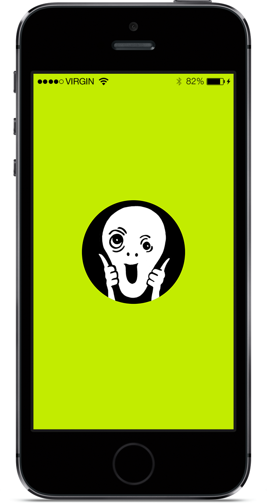
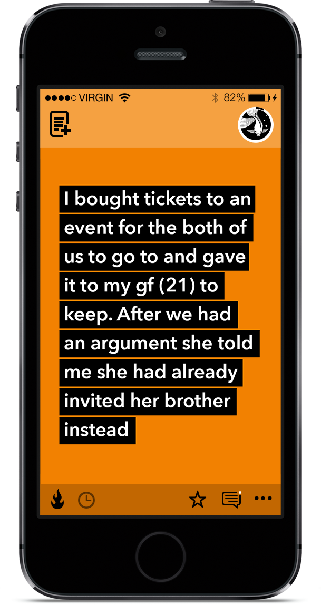
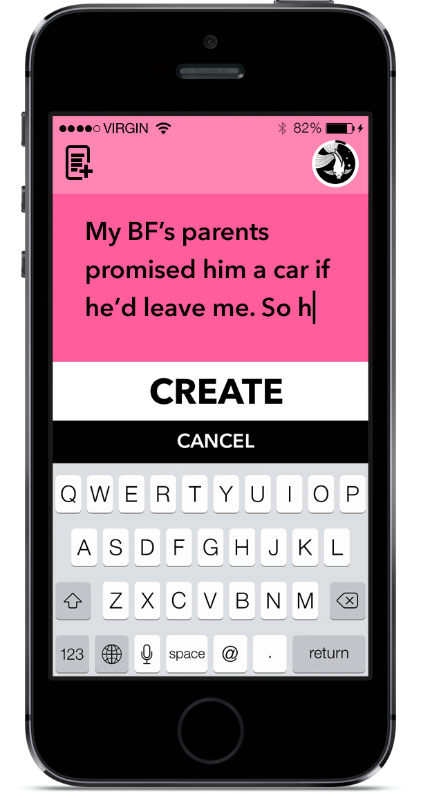
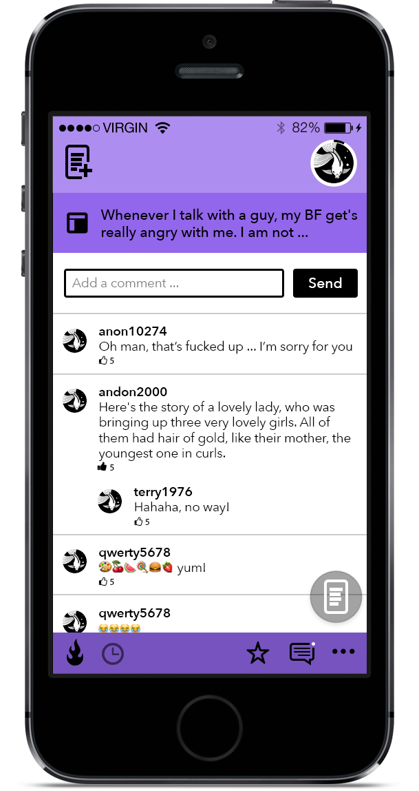
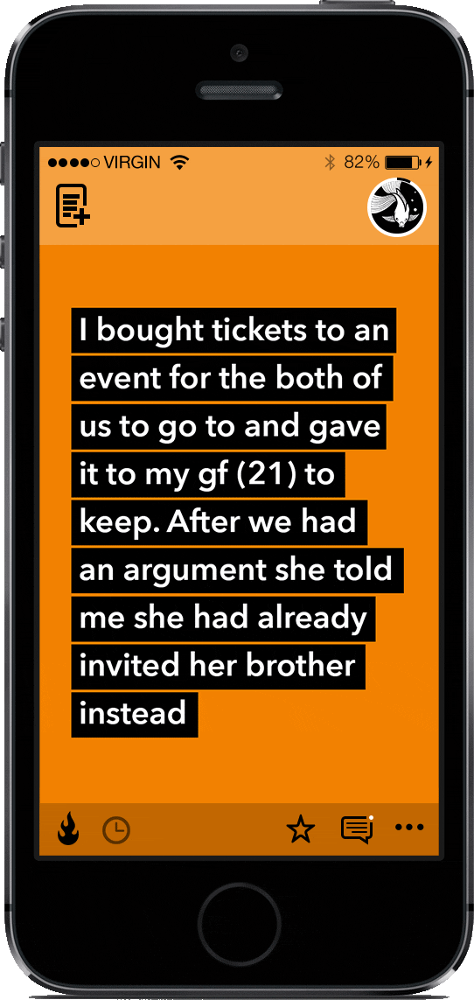
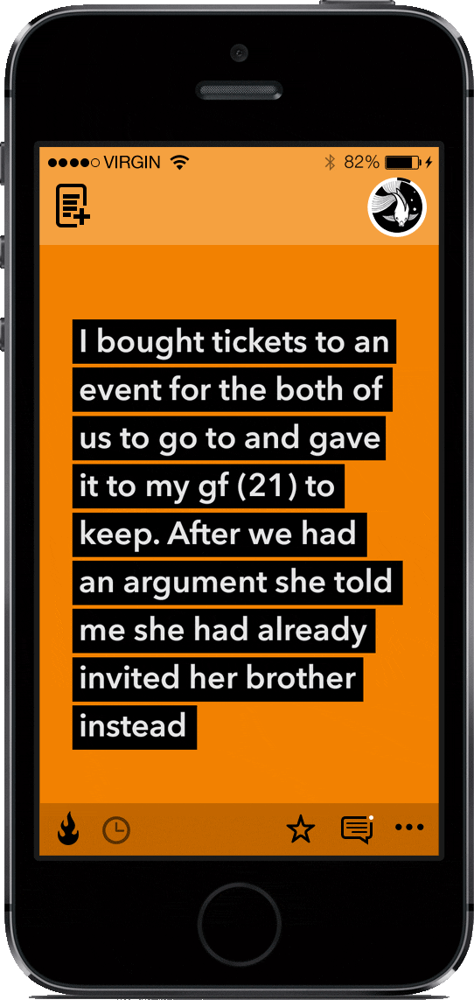

CTFO
Relationship advice iPhone app.
Situation
CTFO (Chill The F*ck Out) is a provocative app, that allows user to get a crowd advice on a tough relationship situation. Users allowed to “vote” on situations with TFU (That’s F*cked Up) or CTFO only.
Task
Create a visually distinctive design for the mobile app.
Splash screen
Card screen
Create a new card screen
 My cards screen
My cards screenCard comments screen
During this project I was also responsible for between-state interactions. I would usually create gifs to communicate the idea to the developer.
Vote update animation
Level-up animation